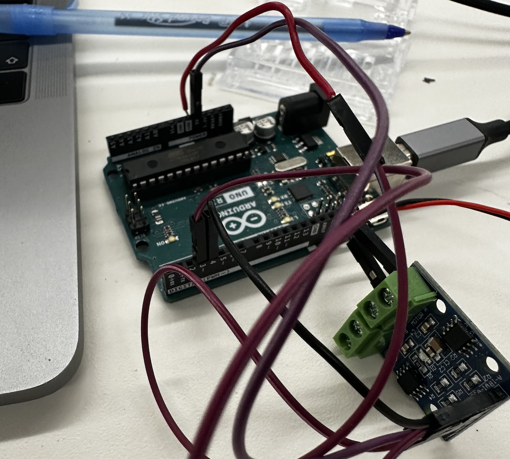

Assignment
For this week's assignment we had to create a kinetic structure that was able to be moved through a circuitry. Then, used a multimeter to measure the voltages in the circuit. Use Ohm's Law to calculate current through the circuit. Document your work and learning. Include at least one video/ gif of the sculpture.
Press-Fit Construction Kit " Fan-Cool"
Materials Used
Calipers, Screwdriver, Wood, Motor, Breadboard circuit, Fusion 360, Arduino, Potentiometer, Hot Glue.
Introduction
Since we had to create a kinetic structure, and is summer (meaning warm temperature), I decided to use the opportunity to create something useful that I could use and benefit from it. So, decided to go ahead and do a fan.
Dimensions + Drawings
I started by drawing a schematic representation with all measures of the parts I wanted to include in my design.

Building Procedure
The first thing I did was to use the lassercut kerf to cut the pieces of my fan, but for this I first had to model them in Fusion 360. I made the model separetely, the base/tower and blades. Then, once I had this, I began to assemble the pieces. I paste the components of the base with hot glue, and the tower was press fit. I would definetely say that mantaining the tower steady, and at the same time holding weight (the motor), was hard, and had to lasercut the tower several times to make the pieces fit perfectly, and ensure its safety. In addition, I model and cut the blades and put them together. For this, I cutted a wood circle and used the electric screwdriver to make a hole so that I could then placr the motor inside and be able to produce the complete 360 degree movement of the fan.
Final Product
This is the final result of my fan. Here is the video of the fan in action. I was able to use it perfectly, but maybe next time I should make the blades different to better spin.

The Code Used to Spin Fan
This is how I build my circuit and the code I used. First thing I did was to set the wires in its right place, and connect it to the motor. Then, started to code. For this, I started by specifying the pins as outputs and inside the function void loop, I adjust the timings so that it could be able to spin clockwise for 4 seconds, and the conuterclockwise for 0.4 seconds.
void setup() {
pinMode(A1A, OUTPUT);
pinMode(A1B, OUTPUT);
digitalWrite(A1A, LOW);
digitalWrite(A1B, LOW);
pinMode(3, OUTPUT);
void loop() {
digitalWrite(A1A, HIGH);
digitalWrite(A1B, LOW);
delay(4000);
digitalWrite(A1A, LOW);
digitalWrite(A1B, LOW);
delay(0400);
digitalWrite(A1A, LOW);
digitalWrite(A1B, HIGH);
delay(4000);
digitalWrite(A1A, LOW);
digitalWrite(A1B, LOW);
delay(0400);
